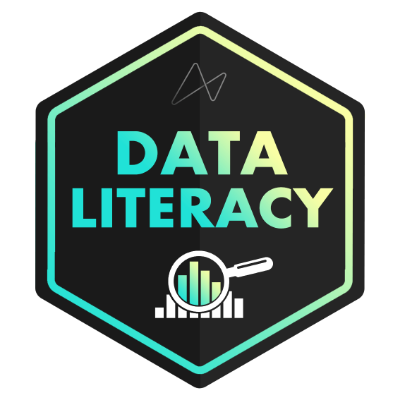
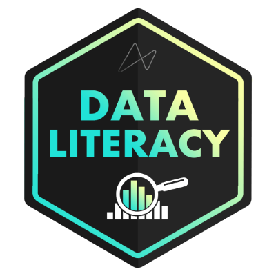

About Me
Data has always been central to how I approach problems. For over 8 years in operations and hospitality leadership, I used analytics to uncover opportunities, improve processes, and influence outcomes long before officially becoming a Data Analyst.
From analyzing guest surveys that drove a 25% improvement in service scores to spotting fraud patterns that cut chargebacks by 15%, I’ve seen how clean data, clear metrics, and compelling storytelling can transform business performance.
Today, I combine that operational insight with a focus on actionable analytics. I design interactive dashboards, build predictive models, and deliver insights that guide strategy. Recent projects include churn modeling, global supply chain optimization, and CRM funnel analysis.
I’m particularly drawn to roles where I can bridge the gap between business and data teams, helping stakeholders ask the right questions, making complex data usable, and turning messy datasets into actionable insights.
If you’re hiring or looking to collaborate on BI, CRM, product, or operations analytics, let’s connect.
Skills Section
Python
SQL
Machine Learning
Tableau
Power BI
Excel
Slack
Asana
Jira
Work Experience
Managing Partner | Operations & Analytics
Marquez MMA – Philadelphia, PA
Aug 2014 – Apr 2025
- Built Google Sheets + SQL dashboards to track attendance, memberships, churn, and revenue, providing leadership daily visibility into performance.
- Increased class fill rates by 20% by analyzing attendance trends and optimizing scheduling.
- Conducted competitor and market analysis to refine pricing and services, driving revenue growth.
- Automated weekly reporting with Google Sheets (PivotTables, formulas), reducing manual reporting time by 40%.
Hospitality Agent | Data-Driven Operations
Sonder Inc. – Philadelphia, PA
Dec 2021 – Dec 2023
- Improved operational efficiency by 8% through workflow analysis using SQL and trend reporting.
- Built and maintained 5+ Tableau and Excel dashboards, enabling executives to monitor KPIs across finance, operations, and customer experience.
- Applied anomaly detection to transactional data, strengthening compliance and fraud prevention.
- Partnered with Operations, Warehouse, and Housekeeping to translate business needs into BI requirements and deliver actionable solutions.
- Documented data hygiene standards that improved dataset quality and reporting reliability.
Night Auditor | Financial & Operations Analysis
Cambria Hotel & Suites – Philadelphia, PA
Feb 2018 – Sep 2021
- Analyzed high-volume transaction data to improve reconciliation accuracy and financial compliance.
- Reduced unresolved balances by 15% by investigating payment discrepancies with financial reporting.
- Built Excel reports (PivotTables, Power Query) to reconcile payments and track discrepancies, improving reporting efficiency.
Education & Certifications
B.S., Business Administration
Cheyney University
2009
Google Data Analytics Specialization
Coursera
2023
Business Intelligence Analyst Track
Maven Analytics
2023
 



Featured Projects
View All Projects →
Jun 2025 – Jul 2025
Global Supply Chain Performance & Cost Optimization
Built an interactive logistics dashboard in Tableau that identified two product groups responsible for 99% of costs. Performed data cleaning and metric engineering (e.g., Delivery Lead Time) in Python to power the analysis.

Apr 2025 – May 2025
Bank Customer Churn Analysis
Achieved 74% recall in predicting customer churn by engineering a machine learning pipeline in Python. A tuned Gradient Boosting model revealed geographic drivers, directly informing a new, targeted retention strategy.

Mar 2025 – Apr 2025
CRM Dashboard: Sales Performance Analysis
Revealed a critical 49% post-engagement drop-off by developing an interactive Tableau dashboard to analyze the sales funnel. Insights were used to benchmark teams and propose targeted optimization strategies.

Feb 2025
Passenger Satisfaction Analysis
Directed a Power BI dashboard project that translated airline satisfaction survey data into actionable insights. Passenger segmentation and trend analysis identified top pain points, enabling data-driven prioritization of service enhancements.
Other Noteworthy Projects
HR Survey Analysis
An Excel based analysis of employee survey data to identify key drivers of satisfaction and guide HR strategy.
View Project →Restaurant Order Analysis
A deep-dive SQL analysis that transforms raw sales data into a strategic roadmap for menu engineering, marketing, and profitability.
View Project →Get In Touch
Whether you have a question or just want to say hi, I’ll try my best to get back to you!